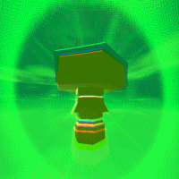

These are all of the projects that I have created or been a
part of.
I work on these on my own time, which is often
sparse these days.

AUGER BOLT
Schwungus Software | WIP | GameMaker
Futuristic 3D platformer. Protect the Behemoths of
the island from pirates as Video.

HUNK QUEST
Schwungus Software | TBD | GameMaker
A fast-paced action-adventure game starring Hunk.

NOBODY TOLD ME ABOUT ID
2020 | GZDoom
Makes DOOM feel more like a Build Engine game by
replicating quirks from Duke Nukem 3D, PowerSlave, Blood
and Shadow Warrior.
Won one of the 2020 Cacowards on Doomworld in the Gameplay mod category.
Won one of the 2020 Cacowards on Doomworld in the Gameplay mod category.